Last updated: 2025-09-29
Checks: 7 0
Knit directory: DCM_snRNAseq/
This reproducible R Markdown analysis was created with workflowr (version 1.7.1). The Checks tab describes the reproducibility checks that were applied when the results were created. The Past versions tab lists the development history.
Great! Since the R Markdown file has been committed to the Git repository, you know the exact version of the code that produced these results.
Great job! The global environment was empty. Objects defined in the global environment can affect the analysis in your R Markdown file in unknown ways. For reproduciblity it’s best to always run the code in an empty environment.
The command set.seed(20240606) was run prior to running
the code in the R Markdown file. Setting a seed ensures that any results
that rely on randomness, e.g. subsampling or permutations, are
reproducible.
Great job! Recording the operating system, R version, and package versions is critical for reproducibility.
Nice! There were no cached chunks for this analysis, so you can be confident that you successfully produced the results during this run.
Great job! Using relative paths to the files within your workflowr project makes it easier to run your code on other machines.
Great! You are using Git for version control. Tracking code development and connecting the code version to the results is critical for reproducibility.
The results in this page were generated with repository version 0546c0e. See the Past versions tab to see a history of the changes made to the R Markdown and HTML files.
Note that you need to be careful to ensure that all relevant files for
the analysis have been committed to Git prior to generating the results
(you can use wflow_publish or
wflow_git_commit). workflowr only checks the R Markdown
file, but you know if there are other scripts or data files that it
depends on. Below is the status of the Git repository when the results
were generated:
Ignored files:
Ignored: .Rhistory
Ignored: .Rproj.user/
Ignored: output/CellChat/
Ignored: output/Chaffin_2022/
Ignored: output/Comparison_RV_bulk_RNAseq/
Ignored: output/Figures_manuscript/
Ignored: output/Genes_Luxembourg/
Ignored: output/Koenig_2022/
Ignored: output/SSc_PAH/
Ignored: output/Variance_partitioning/
Untracked files:
Untracked: GRCh38-2020-A_build/
Untracked: analysis/Chaffin_2022.Rmd
Untracked: analysis/Comparison_RV_bulk_RNAseq.Rmd
Untracked: analysis/DA_DE_all_cell_types_and_parameters.Rmd
Untracked: analysis/DE_Group_all_cell_types.Rmd
Untracked: analysis/Endothelial_cells_Koenig_Reichart.rmd
Untracked: analysis/Endothelial_cells_SGLT2_I.Rmd
Untracked: analysis/Fibroblasts_DA_DE_26.Rmd
Untracked: analysis/Genes_Luxembourg.Rmd
Untracked: analysis/HC_DEGs_clustering.Rmd
Untracked: analysis/Koenig_2022.Rmd
Untracked: analysis/Mass_Spec_RV_dysf.Rmd
Untracked: analysis/Olink_RV_dysf.Rmd
Untracked: analysis/Olink_SSc_PAH.Rmd
Untracked: analysis/Olink_SSc_PAH_draft.Rmd
Untracked: analysis/Selection_genes_histology.Rmd
Untracked: analysis/TOM/
Untracked: analysis/UntitledR.R
Untracked: analysis/VennDiagram.2024-09-16_14-12-56.160498.log
Untracked: analysis/VennDiagram.2024-09-16_14-13-17.340014.log
Untracked: analysis/VennDiagram.2024-09-16_14-13-57.942673.log
Untracked: analysis/VennDiagram.2024-09-16_14-22-50.621507.log
Untracked: analysis/VennDiagram.2024-09-16_14-24-47.010131.log
Untracked: analysis/VennDiagram.2024-09-18_11-22-29.278827.log
Untracked: analysis/VennDiagram.2025-03-25_17-41-35.50458.log
Untracked: analysis/VennDiagram.2025-03-25_17-41-41.199096.log
Untracked: analysis/VennDiagram.2025-03-25_17-41-59.64245.log
Untracked: analysis/VennDiagram.2025-03-25_17-45-11.922474.log
Untracked: analysis/VennDiagram.2025-03-25_17-50-36.483812.log
Untracked: analysis/VennDiagram.2025-03-25_17-56-46.244322.log
Untracked: analysis/VennDiagram.2025-03-25_17-58-30.74362.log
Untracked: analysis/VennDiagram.2025-03-26_15-54-09.244636.log
Untracked: analysis/VennDiagram.2025-06-11_14-53-30.499963.log
Untracked: analysis/ec_Reichart_logCPM.csv
Untracked: analysis/omnipathr-log/
Untracked: code/Add_metadata.R
Untracked: code/Check DYSF.R
Untracked: code/Clustering_genes.R
Untracked: code/DE_5_percent.Rmd
Untracked: code/DE_5_percent.html
Untracked: code/DE_5_percent/
Untracked: code/DE_CM_test1.R
Untracked: code/DE_no_401.Rmd
Untracked: code/DE_no_401.html
Untracked: code/DE_no_401/
Untracked: code/Differential abundance test1.R
Untracked: code/Differential_Expression_edgeR_All.Rmd
Untracked: code/Differential_Expression_edgeR_All_2.Rmd
Untracked: code/Differential_Expression_edgeR_All_2.html
Untracked: code/Differential_Expression_edgeR_All_Age.Rmd
Untracked: code/Differential_Expression_edgeR_All_Age_2.Rmd
Untracked: code/Differential_Expression_edgeR_All_Age_2.html
Untracked: code/Differential_Expression_edgeR_All_groups.Rmd
Untracked: code/Differential_Expression_edgeR_All_groups.html
Untracked: code/Differential_Expression_edgeR_All_groups_2.Rmd
Untracked: code/Differential_Expression_edgeR_All_groups_2.html
Untracked: code/Differential_Expression_edgeR_All_groups_3.Rmd
Untracked: code/Differential_Expression_edgeR_All_groups_3.html
Untracked: code/PCA and CCA analysis test.R
Untracked: code/Pseudobulk DCM HC.R
Untracked: code/Published_heart_datasets_RV_vs_LV.Rmd
Untracked: code/QC_integration_annotation_orig.Rmd
Untracked: code/Removed_chunks.Rmd
Untracked: code/UpSet_plot_DEGs.Rmd
Untracked: code/Volcano_highlighted_genes.R
Untracked: code/ezInteractiveTable.Rmd
Untracked: code/ezInteractiveTable.html
Untracked: code/old.R
Untracked: data/Cellbender_output/
Untracked: data/Cellranger_output/
Untracked: data/DCM_Clinical_data.xlsx
Untracked: data/DCM_Clinical_data_26.xlsx
Untracked: data/Homo_sapiens.GRCh38.93.gtf
Untracked: data/Human_plasma_proteome.xlsx
Untracked: data/Massons_quantification.xlsx
Untracked: data/Published_datasets/
Untracked: data/Raw/
Untracked: data/SSc-PAH/
Untracked: data/gencode.v46.chr_patch_hapl_scaff.annotation.gtf
Untracked: data/gencode.v46.chr_patch_hapl_scaff.basic.annotation.gtf
Untracked: data/refdata-gex-GRCh38-2020-A/
Untracked: omnipathr-log/
Untracked: output/CM_lncRNAs/
Untracked: output/Cardiomyocytes_DA_DE/
Untracked: output/Cardiomyocytes_subclustering/
Untracked: output/Cardiomyocytes_subclustering_26/
Untracked: output/Cell_cell_communication/
Untracked: output/Cell_cell_communication_LV/
Untracked: output/Cell_cell_communication_LV2/
Untracked: output/Comparison_LV/
Untracked: output/DA_DE_all_cell_types_and_parameters/
Untracked: output/DE_Fibrosis_all_cell_types/
Untracked: output/DE_Group_all_cell_types/
Untracked: output/DE_all_cell_types_mPAP/
Untracked: output/DE_mPAP_all_cell_types/
Untracked: output/Differential_expression_edgeR_All/
Untracked: output/Differential_expression_edgeR_All_Age/
Untracked: output/Endothelial_cells_Koenig_Reichart/
Untracked: output/Endothelial_cells_SGLT2_I/
Untracked: output/Endothelial_cells_published_datasets/
Untracked: output/Fibroblasts_DA_DE_26/
Untracked: output/Fibroblasts_subclustering/
Untracked: output/HC_DEGs_clustering/
Untracked: output/LV_Klaudia/
Untracked: output/Mass_Spec_RV_dysf/
Untracked: output/Olink_RV_dysf/
Untracked: output/Olink_SSc_PAH/
Untracked: output/Olink_SSc_PAH_draft/
Untracked: output/QC_integration_annotation/
Untracked: output/Reichart_DE_DCMvsHC/
Untracked: output/Selection_genes_histology/
Untracked: output/UntitledR.R
Untracked: reference_sources/
Unstaged changes:
Modified: analysis/CM_lncRNAs.Rmd
Modified: analysis/Comparison_LV.Rmd
Modified: analysis/DE_mPAP_all_cell_types.Rmd
Deleted: analysis/Differential_Expression_edgeR_All.Rmd
Deleted: analysis/Differential_Expression_edgeR_All_Age.Rmd
Modified: analysis/Endothelial_cells_published_datasets.rmd
Modified: analysis/LV_Klaudia.Rmd
Modified: analysis/QC_integration_annotation.Rmd
Modified: analysis/Reichart_DE_DCMvsHC.Rmd
Modified: analysis/SSc_PAH.Rmd
Note that any generated files, e.g. HTML, png, CSS, etc., are not included in this status report because it is ok for generated content to have uncommitted changes.
These are the previous versions of the repository in which changes were
made to the R Markdown
(analysis/Fibroblasts_subclustering.Rmd) and HTML
(docs/Fibroblasts_subclustering.html) files. If you’ve
configured a remote Git repository (see ?wflow_git_remote),
click on the hyperlinks in the table below to view the files as they
were in that past version.
| File | Version | Author | Date | Message |
|---|---|---|---|---|
| Rmd | 0546c0e | GinoBonazza | 2025-09-29 | wflow_publish("analysis/Fibroblasts_subclustering.Rmd") |
Setup
# Get current file name to make folder
current_file <- "Fibroblasts_subclustering"
# Load libraries
library(here)
library(readr)
library(readxl)
library(xlsx)
library(Seurat)
library(DropletUtils)
library(Matrix)
library(scDblFinder)
library(scCustomize)
library(dplyr)
library(ggplot2)
library(magrittr)
library(tidyverse)
library(reshape2)
library(S4Vectors)
library(SingleCellExperiment)
library(pheatmap)
library(png)
library(gridExtra)
library(knitr)
library(scales)
library(RColorBrewer)
library(Matrix.utils)
library(tibble)
library(ggplot2)
library(scater)
library(patchwork)
library(statmod)
library(ArchR)
library(clustree)
library(harmony)
library(gprofiler2)
library(clusterProfiler)
library(org.Hs.eg.db)
library(AnnotationHub)
library(ReactomePA)
library(speckle)
library(limma)
library(reactable)
library(decoupleR)
library(OmnipathR)
library(dorothea)
library(enrichplot)
#Output paths
output_dir_data <- here::here("output", current_file)
if (!dir.exists(output_dir_data)) dir.create(output_dir_data)
if (!dir.exists(here::here("docs", "figure"))) dir.create(here::here("docs", "figure"))
output_dir_figs <- here::here("docs", "figure", paste0(current_file, ".Rmd"))
if (!dir.exists(output_dir_figs)) dir.create(output_dir_figs)Load dataset and subset cardiomyocytes
DCM_RV_integrated <- readRDS(here::here("output", "QC_integration_annotation", "DCM_RV_integrated_RNA.rds"))
DefaultAssay(DCM_RV_integrated) <- "RNA"
FB <- subset(DCM_RV_integrated, cell_type == "Fibroblasts")Integration and clustering
Re-normalize and re-scale the subsetted object using SCTransform
FB <- SplitObject(FB, split.by = "Sample")
for (i in 1:length(FB)) {
FB[[i]] <- SCTransform(FB[[i]], vst.flavor = "v2", vars.to.regress = c("percent.mt", "percent.rp"), return.only.var.genes = FALSE, min_cells = 0)
}PCA
features <- SelectIntegrationFeatures(object.list = FB, nfeatures = 2000)
FB <- merge(x = FB[[1]], y = FB[2:length(FB)], merge.data=TRUE)
VariableFeatures(FB) <- features
FB <- RunPCA(FB)saveRDS(FB,
here::here(output_dir_data, "FB.rds"))FB <- readRDS(here::here(output_dir_data, "FB.rds"))ElbowPlot(FB, ndims = 50)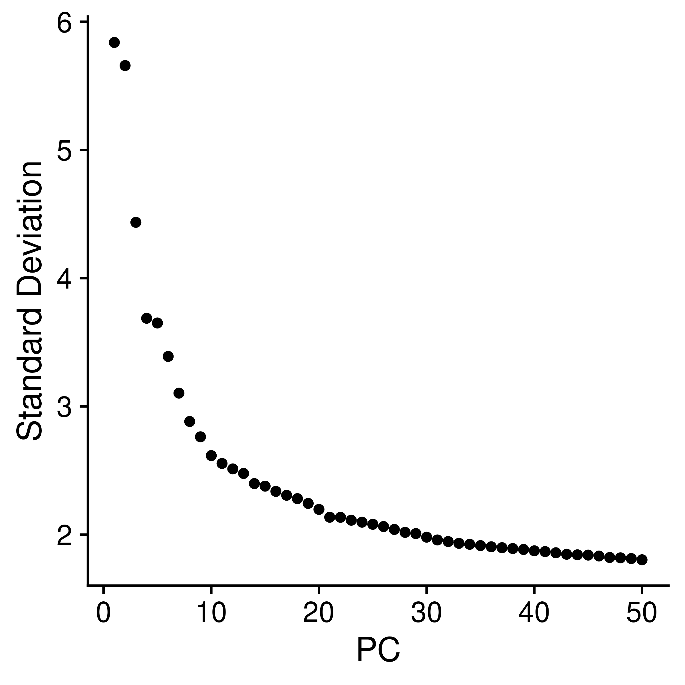
Reintegrate the samples using Harmony
FB <- RunHarmony(FB, assay.use="SCT", group.by.vars = "Sample", dims.use = 1:50)Clustering after integration
DefaultAssay(FB) <- "SCT"
FB <- RunUMAP(FB, dims = 1:50, reduction = "harmony")
FB <- FindNeighbors(FB, dims = 1:50, reduction = "harmony")
FB <- FindClusters(FB, resolution = seq(0.1, 0.8, by=0.1))clustree::clustree(FB@meta.data[,grep("SCT_snn_res", colnames(FB@meta.data))], prefix = "SCT_snn_res.")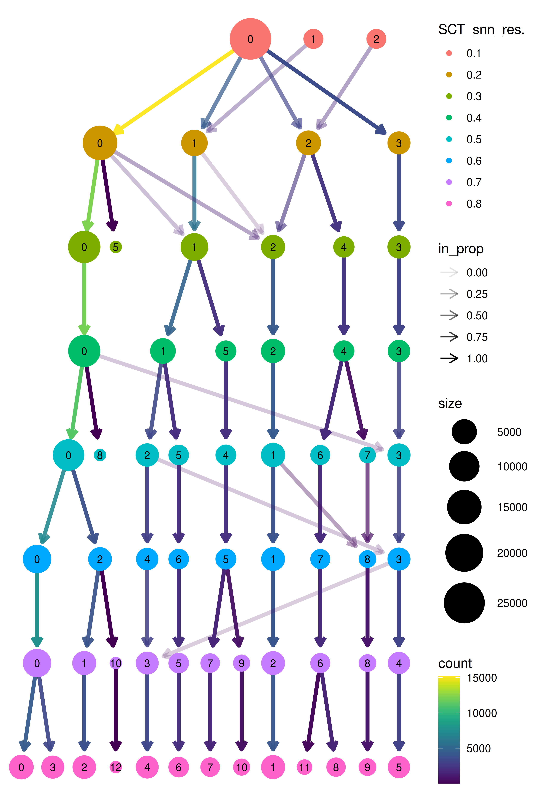
DimPlot(FB, reduction = "umap", shuffle = T,
group.by = c("SCT_snn_res.0.3", "Sample", "Group", "Batch_processing"), ncol = 2)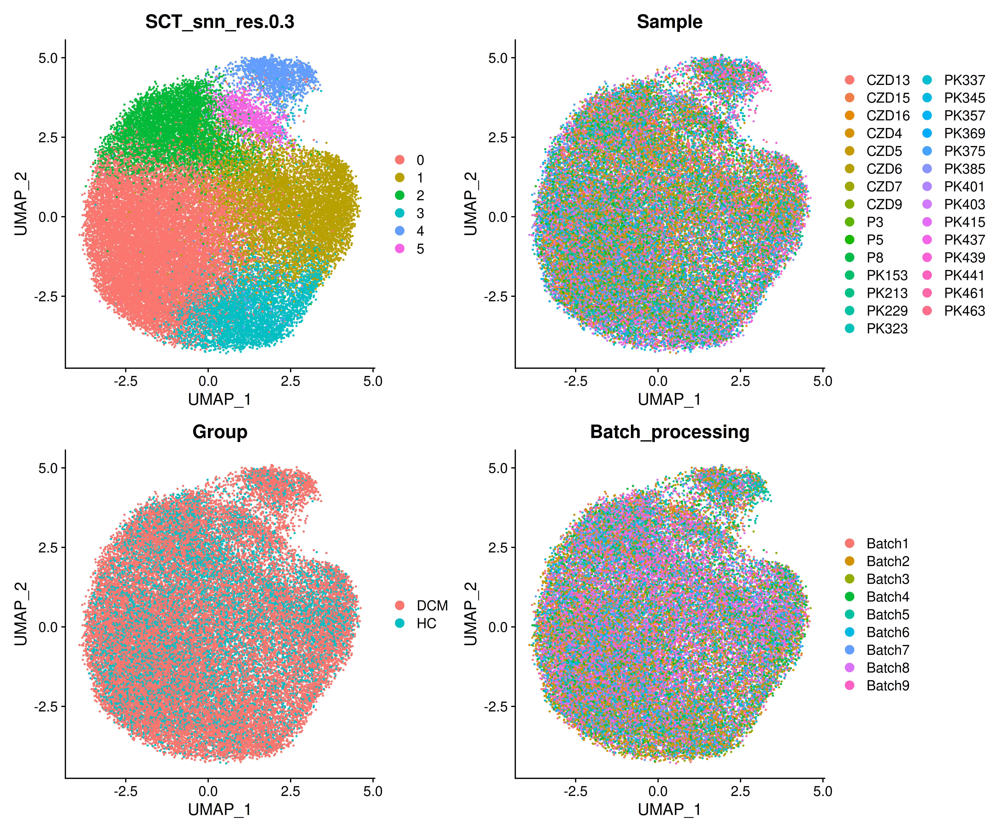
Clinical_data <- read_excel(here::here("data", "DCM_Clinical_data_26.xlsx"))
add_metadata <- left_join(FB[["Sample"]], Clinical_data)
row.names(add_metadata) <- row.names(FB[[]])
FB <- AddMetaData(FB, metadata = add_metadata)
rm(add_metadata, Clinical_data)saveRDS(FB,
here::here(output_dir_data, "FB.rds"))Find the markers that characterize each cell population
DefaultAssay(FB) <- "SCT"
FB <- PrepSCTFindMarkers(FB)
Idents(FB) <- "SCT_snn_res.0.3"
Markers <- FindAllMarkers(FB, only.pos = TRUE, min.pct = 0.1, logfc.threshold = 0.25)
Markers_top10 <- as.data.frame(Markers %>% group_by(cluster) %>% top_n(n = 10, wt = avg_log2FC))
Markers_top3 <- as.data.frame(Markers %>% group_by(cluster) %>% top_n(n = 3, wt = avg_log2FC))mapal <- colorRampPalette(RColorBrewer::brewer.pal(9,"RdBu"))(256)
mapal <- rev(mapal[1:256])
Heatmap <- DoHeatmap(subset(FB, cells = sample(colnames(FB), 20000)), label = FALSE, draw.line = F, features = Markers_top10$gene) +
scale_fill_gradientn(colours = mapal) +
theme(axis.text.y = element_text(size = 5)) +
theme(plot.margin = unit(c(0.1, 0, 0, 0),
"inches"))
Heatmap
cell_type_cols <- c("#d05050", "#33A02C", "#1F78B4", "#CAB2D6", "#FF7F00", "#B2DF8A", "#B15928", "#FFD000", "#FA95C0", "#FDBF6F", "#6A3D9A", "#7aCDF9") Check QC parameters in each cluster
VlnPlot_scCustom(FB, features = c("nCount_RNA", "nFeature_RNA", "percent.mt", "percent.rp"), num_columns = 2, pt.size = 0, colors_use = cell_type_cols) + theme(axis.title.x = element_blank())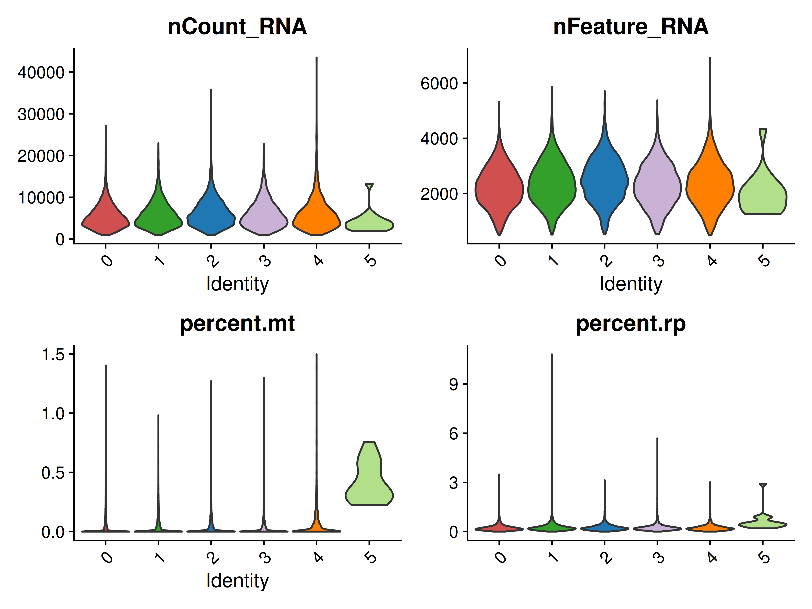
Cell type annotation
Annotate the clusters
FB@meta.data[FB@meta.data$SCT_snn_res.0.3 %in% c("0"), "cell_state"] = "FB1"
FB@meta.data[FB@meta.data$SCT_snn_res.0.3 %in% c("1"), "cell_state"] = "FB2"
FB@meta.data[FB@meta.data$SCT_snn_res.0.3 %in% c("2"), "cell_state"] = "FB3"
FB@meta.data[FB@meta.data$SCT_snn_res.0.3 %in% c("3"), "cell_state"] = "FB4"
FB@meta.data[FB@meta.data$SCT_snn_res.0.3 %in% c("4"), "cell_state"] = "FB5"
FB$cell_state <- factor(FB$cell_state, levels = c("FB1", "FB2", "FB3","FB4","FB5"))
Idents(FB) <- FB$cell_stateDefaultAssay(FB) <- "SCT"
Idents(FB) <- "cell_state"
Markers <- FindAllMarkers(FB, only.pos = TRUE, min.pct = 0.1, logfc.threshold = 0.25)
write.csv(Markers, here::here(output_dir_data, "FB_Markers_all_cell_state.csv"))
Markers_top10 <- as.data.frame(Markers %>% group_by(cluster) %>% top_n(n = 10, wt = avg_log2FC))
write.csv(Markers_top10, here::here(output_dir_data, "FB_Markers_top10_cell_state.csv"))
Markers_top3 <- as.data.frame(Markers %>% group_by(cluster) %>% top_n(n = 3, wt = avg_log2FC))
write.csv(Markers_top3, here::here(output_dir_data, "FB_Markers_top3_cell_state.csv"))Heatmap <- DoHeatmap(subset(FB, cells = sample(colnames(FB), 20000)), label = TRUE, draw.line = F, features = Markers_top10$gene) +
scale_fill_gradientn(colours = mapal) +
theme(text = element_text(size = 12),
axis.text.y = element_text(size = 8)) +
theme(plot.margin = unit(c(0.2, 0, 0, 0), "inches")) +
guides(fill = guide_colorbar(barwidth = 1, barheight = 4)) + guides(color = "none")
Heatmap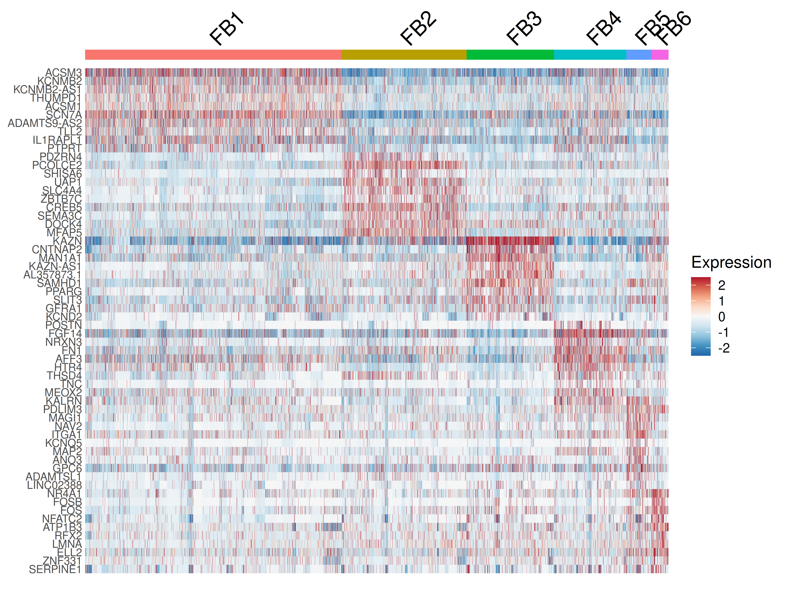
p <- DimPlot(
FB,
group.by = "cell_state",
reduction = "umap",
cols = cell_type_cols,
label = FALSE,
shuffle=T,
pt.size = 0.1
) +
NoLegend() +
theme(axis.text = element_text(size = 8, face = "bold"),
axis.title = element_text(size = 12, face = "bold"),
plot.title = element_blank())
LabelClusters(p,
id = "cell_state",
fontface = "bold",
size = 8,
repel = TRUE)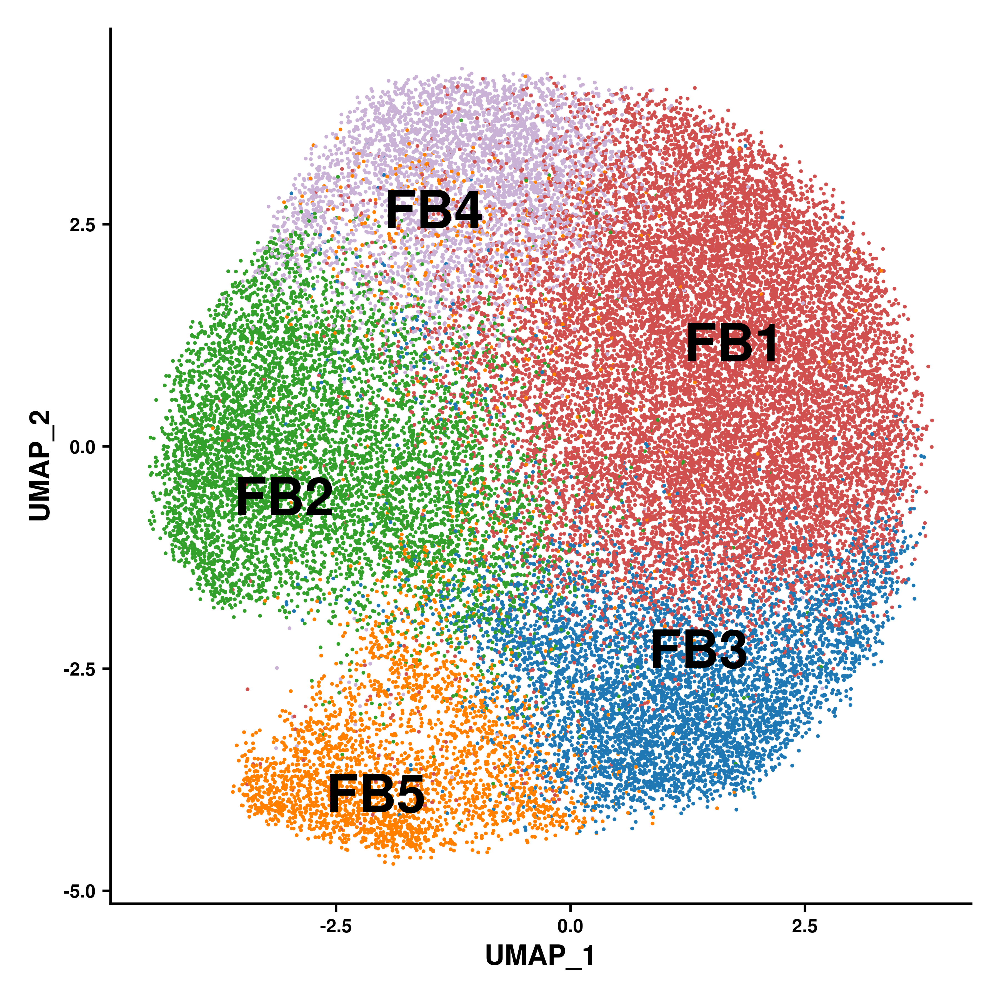
Idents(FB) <- factor(
Idents(FB),
levels = rev(levels(Idents(FB)))
)
p <- DotPlot_scCustom(
FB,
features = Markers_top3$gene,
x_lab_rotate = TRUE
)
p + theme(
axis.text.x = element_text(size = 12,
angle = 60,
vjust = 1,
hjust = 1),
axis.text.y = element_text(size = 15)) 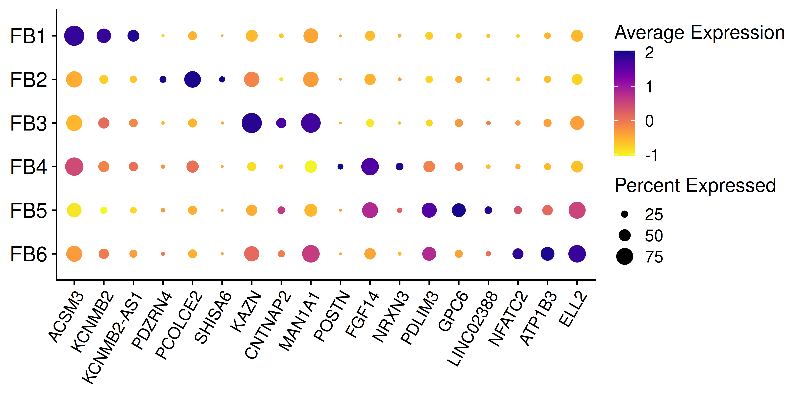
Idents(FB) <- FB$cell_stateVlnPlot_scCustom(FB, features = c("ACSM3", "PCOLCE2", "KAZN", "FGF14", "NFATC2"), num_columns = 5, colors_use = cell_type_cols)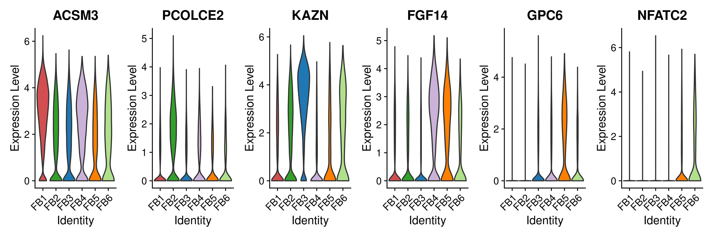
FeaturePlot_scCustom(FB, features = Markers_top3$gene, num_columns = 3)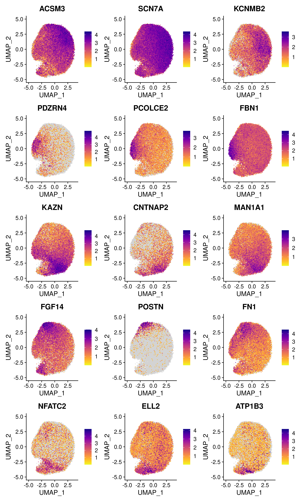
FeaturePlot_scCustom(FB, features = c("POSTN", "ACTA2", "FAP", "VIM", "COL1A1"), num_columns = 5)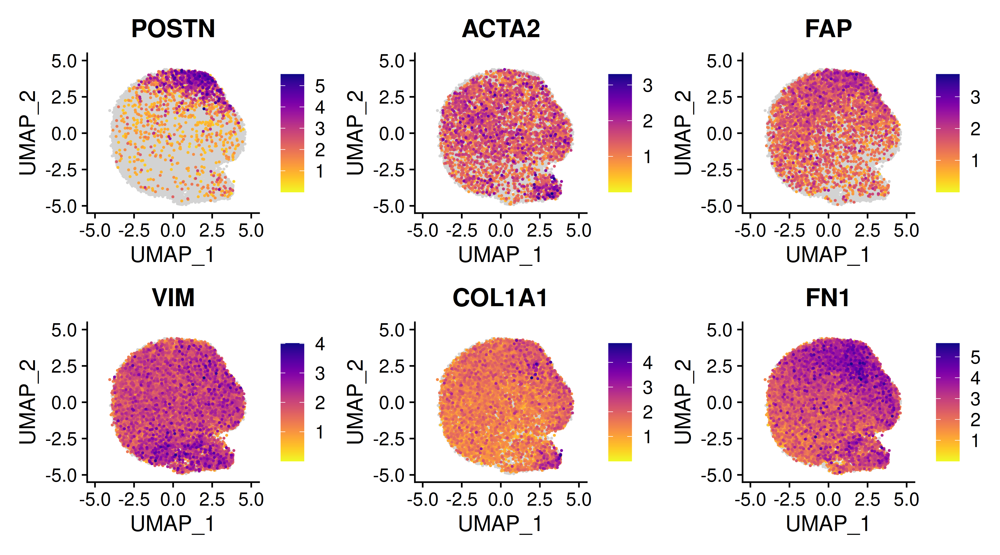
props <- getTransformedProps(FB$cell_state, FB$Sample, transform="logit")
par(mar = c(7, 5, 1, 8), xpd = TRUE)
barplot(props$Proportions, legend = FALSE, ylab = "Proportions", col = cell_type_cols,
cex.names = 2, las = 2, font.lab = 2, font.axis = 2, cex.axis = 1.2, cex.lab = 2)
legend("topright", inset = c(-0.1, 0.1), legend = rownames(props$Proportions), fill = cell_type_cols, bty = "n", cex = 2)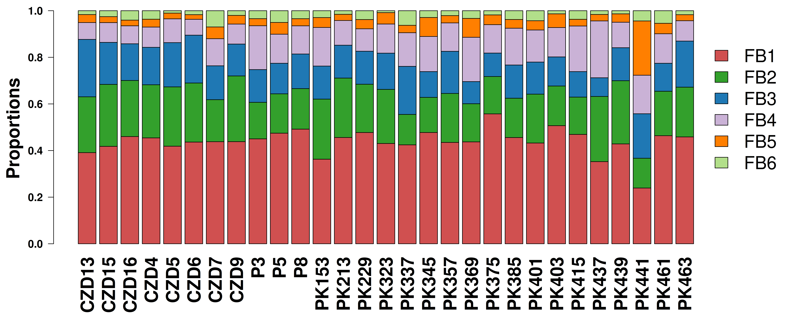
props <- getTransformedProps(FB$cell_state, FB$Group, transform="logit")
par(mar = c(7, 5, 1, 8), xpd = TRUE)
barplot(props$Proportions, legend = FALSE, ylab = "Proportions", col = cell_type_cols,
cex.names = 2, las = 2, font.lab = 2, font.axis = 2, cex.axis = 1.2, cex.lab = 2)
legend("topright", inset = c(-0.65, 0.15), legend = rownames(props$Proportions), fill = cell_type_cols, bty = "n", cex = 2)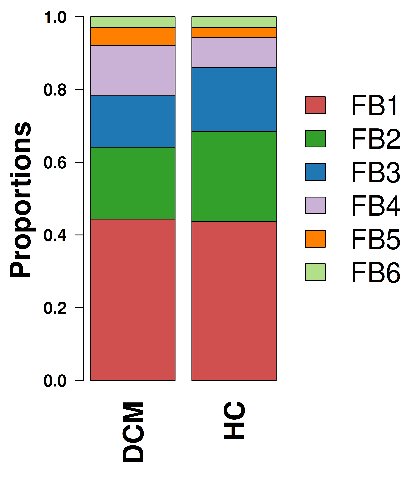
df <- Markers[,7:6]
dfsample <- split(df$gene,df$cluster)
length(dfsample)[1] 5dfsample$FB1 = bitr(dfsample$FB1, fromType="SYMBOL", toType="ENTREZID", OrgDb="org.Hs.eg.db")
dfsample$FB2 = bitr(dfsample$FB2, fromType="SYMBOL", toType="ENTREZID", OrgDb="org.Hs.eg.db")
dfsample$FB3 = bitr(dfsample$FB3, fromType="SYMBOL", toType="ENTREZID", OrgDb="org.Hs.eg.db")
dfsample$FB4 = bitr(dfsample$FB4, fromType="SYMBOL", toType="ENTREZID", OrgDb="org.Hs.eg.db")
dfsample$FB5 = bitr(dfsample$FB5, fromType="SYMBOL", toType="ENTREZID", OrgDb="org.Hs.eg.db")
genelist <- list("FB1" = dfsample$FB1$ENTREZID,
"FB2" = dfsample$FB2$ENTREZID,
"FB3" = dfsample$FB3$ENTREZID,
"FB4" = dfsample$FB4$ENTREZID,
"FB5" = dfsample$FB5$ENTREZID
)
gene_counts <- rowSums(FB@assays$RNA@counts > 0)
universe_genes <- names(gene_counts[gene_counts >= 3])
universe_entrez <- bitr(universe_genes, fromType = "SYMBOL", toType = "ENTREZID", OrgDb = org.Hs.eg.db)$ENTREZIDGO <- compareCluster(geneCluster = genelist, fun = "enrichGO", ont = "ALL", OrgDb = "org.Hs.eg.db", universe = universe_entrez)
GO <- gsfilter(GO, by = 'Count', min = 3)
dotplot(GO, label_format = 35, title = "GO - Over-representation analysis")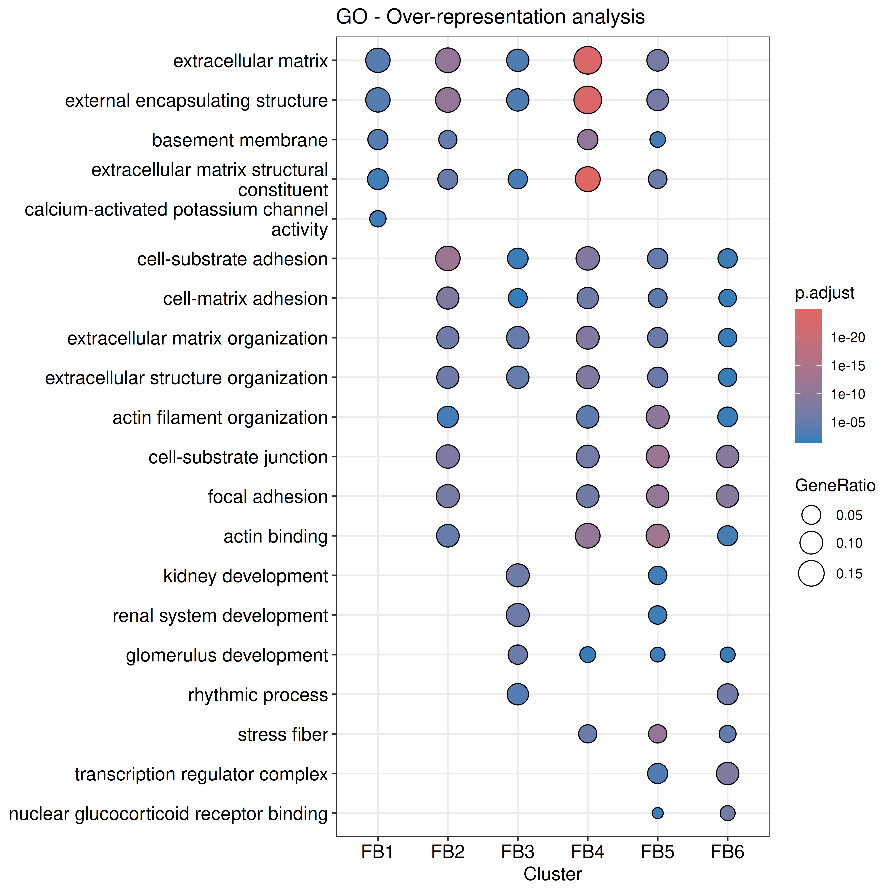
GO_simplified <- simplify(
GO,
cutoff = 0.5,
by = "p.adjust",
select_fun = min,
measure = "Wang",
semData = NULL
)
dotplot(GO_simplified, label_format = 35, title = "GO - Over-representation analysis")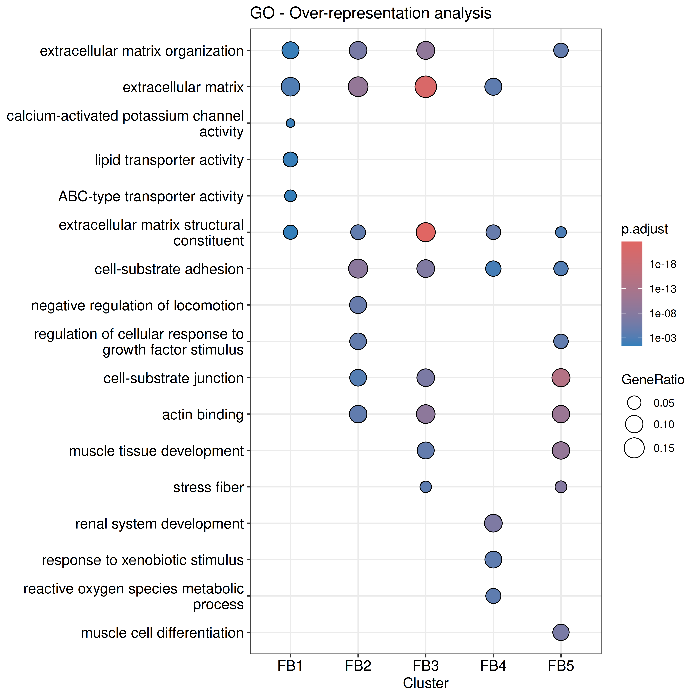
KEGG <- compareCluster(geneCluster = genelist, fun = "enrichKEGG", organism = 'hsa', universe = universe_entrez)
KEGG <- gsfilter(KEGG, by = 'Count', min = 3)
dotplot(KEGG, label_format = 35, title = "KEGG Pathways")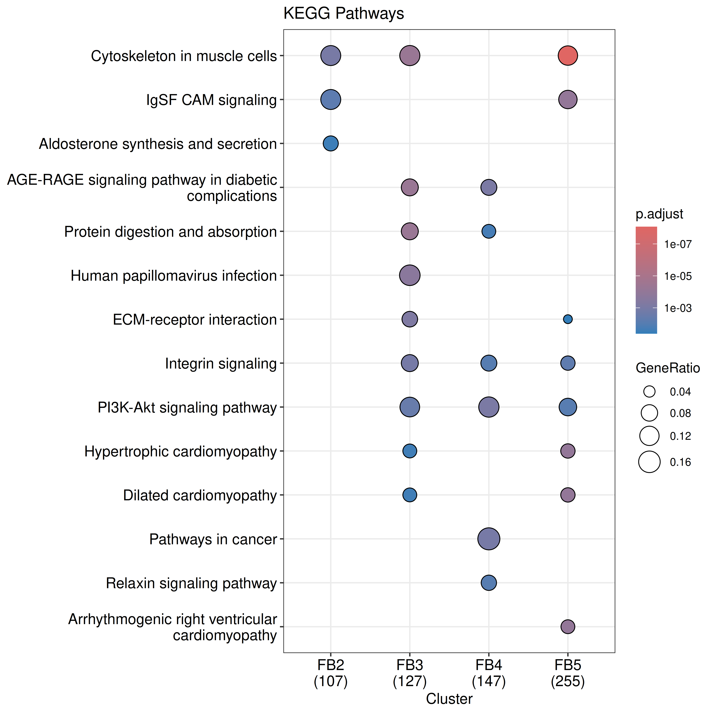
REACTOME <- compareCluster(geneCluster = genelist, fun = "enrichPathway", organism = 'human', universe = universe_entrez)
REACTOME <- gsfilter(REACTOME, by = 'Count', min = 3)
dotplot(REACTOME, label_format = 40, title = "REACTOME", showCategory = 4)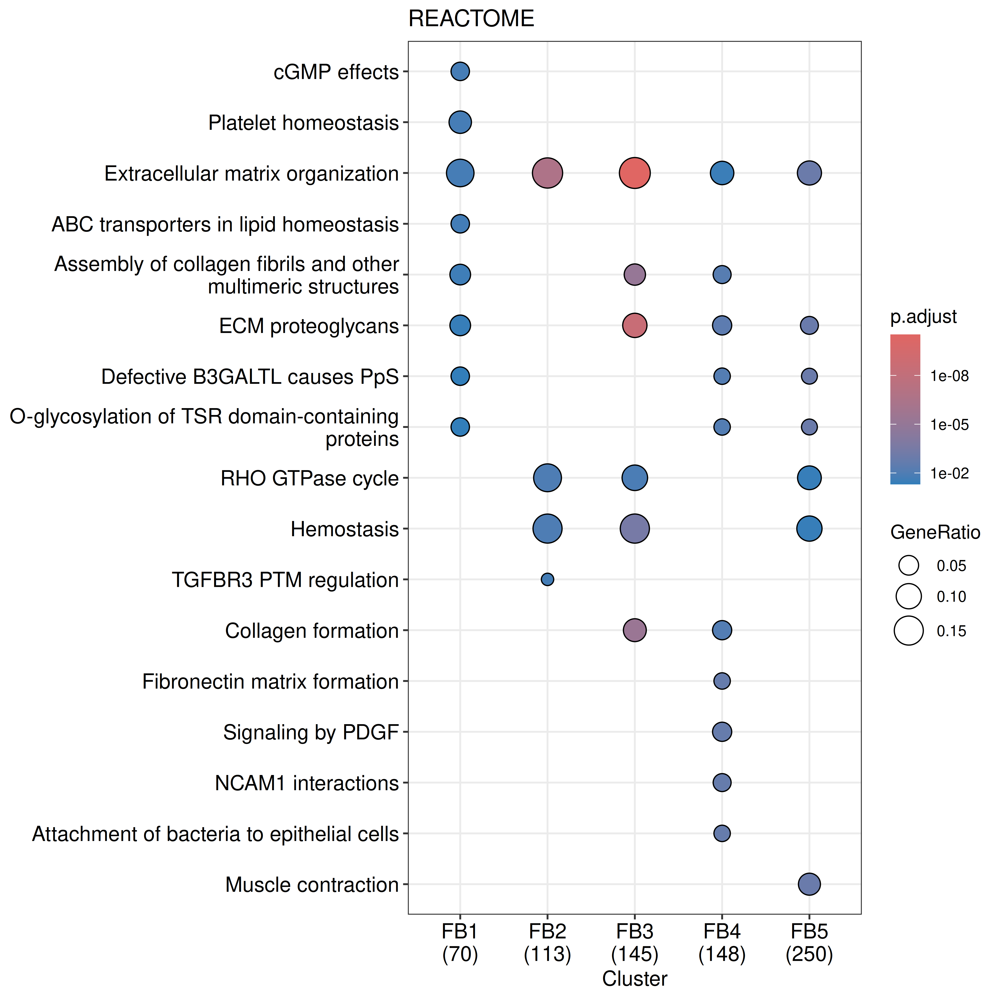
Differential abundance analysis
metadata <- FB@meta.data %>%
dplyr::select(Sample, Batch_processing, Batch_sequencing, Age_years, Sex, Group, mPAP_mmHg, sPAP_mmHg, PCW_mmHg, PVR_WU, TAPSE_mm, RVID_mm, LVEF_percent, LVEDD_mm) %>%
unique() %>%
dplyr::arrange(match(Sample, names(table(FB$Sample))))
rownames(metadata) <- metadata$Sample
all.equal(metadata$Sample, names(table(FB$Sample)))[1] TRUEreactable(metadata,
filterable = TRUE,
searchable = TRUE,
showPageSizeOptions = TRUE)metadata_DCM <- metadata %>%
dplyr::filter(Group == "DCM")differential_abundance <- data.frame()
props <- getTransformedProps(FB$cell_state, FB$Sample, transform="logit")
for (i in 7:(length(metadata_DCM))) {
metadata_subset <- metadata_DCM[complete.cases(metadata_DCM[[i]]),]
props_subset <- props
props_subset$Counts <- props$Counts[, metadata_subset$Sample, drop = FALSE]
props_subset$TransformedProps <- props$TransformedProps[, metadata_subset$Sample, drop = FALSE]
props_subset$Proportions <- props$Proportions[, metadata_subset$Sample, drop = FALSE]
metadata_subset <- metadata_subset %>%
arrange(Sample, colnames(props_subset$Proportions))
design <- model.matrix(~ metadata_subset[[i]] + metadata_subset[["Age_years"]])
fit <- lmFit(props_subset$TransformedProps, design)
fit <- eBayes(fit, robust=TRUE)
differential_abundance_temp <- topTable(fit, n = Inf, coef = 2)
differential_abundance_temp$metadata <- colnames(metadata_subset[i])
differential_abundance_temp$cell_state <- rownames(differential_abundance_temp)
differential_abundance <- rbind(differential_abundance, differential_abundance_temp)
}
rm(metadata_subset, props_subset, design, fit, differential_abundance_temp)
rownames(differential_abundance) <- NULL
differential_abundance <- dplyr::arrange(differential_abundance, adj.P.Val)
write.csv(differential_abundance, file = here::here(output_dir_data, "FB_Differential_Abundance.csv"), row.names = F)
reactable(differential_abundance,
filterable = TRUE,
searchable = TRUE,
showPageSizeOptions = TRUE)metadata_subset <- metadata[complete.cases(metadata[["RVID_mm"]]),]
props_subset <- props
props_subset$Counts <- props$Counts[, metadata_subset$Sample, drop = FALSE]
props_subset$TransformedProps <- props$TransformedProps[, metadata_subset$Sample, drop = FALSE]
props_subset$Proportions <- props$Proportions[, metadata_subset$Sample, drop = FALSE]
metadata_subset <- metadata_subset %>%
arrange(Sample, colnames(props_subset$Proportions))
design <- model.matrix(~ metadata_subset$RVID_mm + metadata_subset$Age_years)
fit.prop <- lmFit(props_subset$Proportions,design)
par(mfrow=c(1,5), mar = c(5, 5, 3, 1))
for(i in seq(1,5,1)){
plot(metadata_subset$RVID_mm, props_subset$Proportions[i,], main = rownames(props_subset$Proportions)[i],
pch=16, cex=2, ylab="Proportions", xlab="RVID_mm", cex.lab=2, cex.axis=1.5,
cex.main=2.5)
abline(a=fit.prop$coefficients[i,1], b=fit.prop$coefficients[i,2], col=4,
lwd=1)
}
rm(metadata_subset, props_subset, design, fit.prop)metadata_subset <- metadata[complete.cases(metadata[["mPAP_mmHg"]]),]
props_subset <- props
props_subset$Counts <- props$Counts[, metadata_subset$Sample, drop = FALSE]
props_subset$TransformedProps <- props$TransformedProps[, metadata_subset$Sample, drop = FALSE]
props_subset$Proportions <- props$Proportions[, metadata_subset$Sample, drop = FALSE]
metadata_subset <- metadata_subset %>%
arrange(Sample, colnames(props_subset$Proportions))
design <- model.matrix(~ metadata_subset$mPAP_mmHg + metadata_subset$Age_years)
fit.prop <- lmFit(props_subset$Proportions,design)
par(mfrow=c(1,5), mar = c(5, 5, 3, 1))
for(i in seq(1,5,1)){
plot(metadata_subset$mPAP_mmHg, props_subset$Proportions[i,], main = rownames(props_subset$Proportions)[i],
pch=16, cex=2, ylab="Proportions", xlab="mPAP_mmHg", cex.lab=2, cex.axis=1.5,
cex.main=2.5)
abline(a=fit.prop$coefficients[i,1], b=fit.prop$coefficients[i,2], col=4,
lwd=1)
}
rm(metadata_subset, props_subset, design, fit.prop)design <- model.matrix(~ 0 + metadata$Group)
colnames(design) <- c("DCM", "HC")
mycontr <- makeContrasts(DCM-HC, levels=design)
differential_abundance_HC <- propeller.ttest(props, design, contrasts = mycontr, robust=TRUE, trend=FALSE, sort=TRUE)
write.csv(differential_abundance_HC, file = here::here(output_dir_data, "FB_Differential_Abundance_HC.csv"), row.names = F)
reactable(differential_abundance_HC,
filterable = TRUE,
searchable = TRUE,
showPageSizeOptions = TRUE)prop_mat <- as.matrix(props$Proportions)
stopifnot(is.matrix(prop_mat))
# 2) Long format
prop_long <- as.data.frame.matrix(prop_mat) %>% # <-- important: *.matrix
tibble::rownames_to_column("state") %>%
pivot_longer(cols = -state, names_to = "Sample", values_to = "prop") %>%
mutate(Sample = as.character(Sample),
state = factor(state, levels = rownames(prop_mat))) %>%
left_join(metadata %>% dplyr::select(Sample, Group) %>% distinct(),
by = "Sample") %>%
mutate(Group = factor(Group, levels = c("HC","DCM")))
# ---- Build labels from propeller results ----
# rownames of differential_abundance_HC should be the state names
lab_df <- differential_abundance_HC %>%
mutate(state = rownames(differential_abundance_HC),
label = ifelse(FDR < 0.05, paste0("FDR=", signif(FDR, 2)), "ns")) %>%
dplyr::select(state, label)
# y-position for labels (a little above the highest point per facet)
y_pos <- prop_long %>%
group_by(state) %>%
summarise(y = max(prop, na.rm = TRUE) * 1.08, .groups = "drop")
lab_plot <- left_join(lab_df, y_pos, by = "state")
# ---- Colors (classic blue/red) ----
cols <- c(HC = "#1f77b4", DCM = "#d62728")
# ---- Plot ----
p <- ggplot(prop_long, aes(x = Group, y = prop, fill = Group, color = Group)) +
geom_boxplot(width = 0.6, outlier.shape = NA, alpha = 0.35) +
geom_jitter(width = 0.12, size = 1.8, alpha = 0.9) +
facet_wrap(~ state, nrow = 1, scales = "free_y") +
geom_text(data = lab_plot, aes(x = 1.5, y = y, label = label),
inherit.aes = FALSE, size = 4.5) +
scale_fill_manual(values = cols) +
scale_color_manual(values = cols) +
labs(x = NULL, y = "Proportions") +
theme_classic(base_size = 14) +
theme(
legend.position = "none",
strip.text = element_text(face = "bold", size = 14),
axis.text.x = element_text(size = 12),
axis.title.y = element_text(size = 13),
panel.spacing = unit(1.5, "lines")
)
p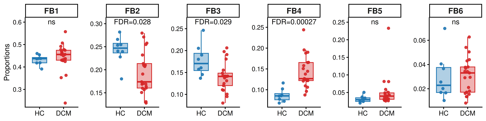
FB_proportions <- as.data.frame(props$Proportions) %>%
pivot_wider(
names_from = clusters,
values_from = Freq
)
write.csv(FB_proportions, file = here::here(output_dir_data, "FB_Proportions.csv"), row.names = F)rm(differential_abundance, differential_abundance_HC, props, FB_proportions)Transcription factor inference analysis
net <- get_collectri(organism='human', split_complexes=FALSE)DefaultAssay(FB) <- "RNA"
FB <- NormalizeData(FB)expr_matrix <- GetAssayData(object = FB, assay = "RNA", slot = "counts")
non_zero_cells <- rowSums(expr_matrix > 0)
total_cells <- ncol(expr_matrix)
percent_cells <- (non_zero_cells / total_cells) * 100
percent_stats <- data.frame(gene = rownames(expr_matrix), percentCells = percent_cells)net <- net %>%
dplyr::filter(source %in% filter(percent_stats, percentCells > 5)$gene)TF_cols <- rev(colorRampPalette(brewer.pal(5, "BrBG"))(101))mat <- as.matrix(FB@assays$RNA@data)
acts <- decoupleR::run_ulm(mat = mat,
net = net,
.source = 'source',
.target = 'target',
.mor='mor',
minsize = 10)
FB[['tfsulm']] <- acts %>%
tidyr::pivot_wider(id_cols = 'source',
names_from = 'condition',
values_from = 'score') %>%
tibble::column_to_rownames('source') %>%
Seurat::CreateAssayObject(.)
DefaultAssay(object = FB) <- "tfsulm"
FB <- Seurat::ScaleData(FB)
FB@assays$tfsulm@data <- FB@assays$tfsulm@scale.datan_tfs <- 10
df <- t(as.matrix(FB@assays$tfsulm@data)) %>%
as.data.frame() %>%
dplyr::mutate(cluster = Seurat::Idents(FB)) %>%
tidyr::pivot_longer(cols = -cluster,
names_to = "source",
values_to = "score") %>%
dplyr::group_by(cluster, source) %>%
dplyr::summarise(mean = mean(score))
df <- df %>%
filter(source %in% filter(percent_stats, percentCells > 5)$gene)
tfs <- df %>%
dplyr::group_by(source) %>%
dplyr::summarise(std = stats::sd(mean)) %>%
dplyr::arrange(-abs(std)) %>%
head(n_tfs) %>%
dplyr::pull(source)
top_acts_mat <- df %>%
dplyr::filter(source %in% tfs) %>%
tidyr::pivot_wider(id_cols = 'cluster',
names_from = 'source',
values_from = 'mean') %>%
tibble::column_to_rownames('cluster') %>%
as.matrix()
my_breaks <- c(seq(-2, 0, length.out = ceiling(101 / 2) + 1),
seq(0.05, 2, length.out = floor(101 / 2)))
# Plot
pheatmap::pheatmap(mat = top_acts_mat,
color = TF_cols,
border_color = "white",
breaks = my_breaks,
cellwidth = 15,
cellheight = 15,
treeheight_row = 20,
treeheight_col = 20) 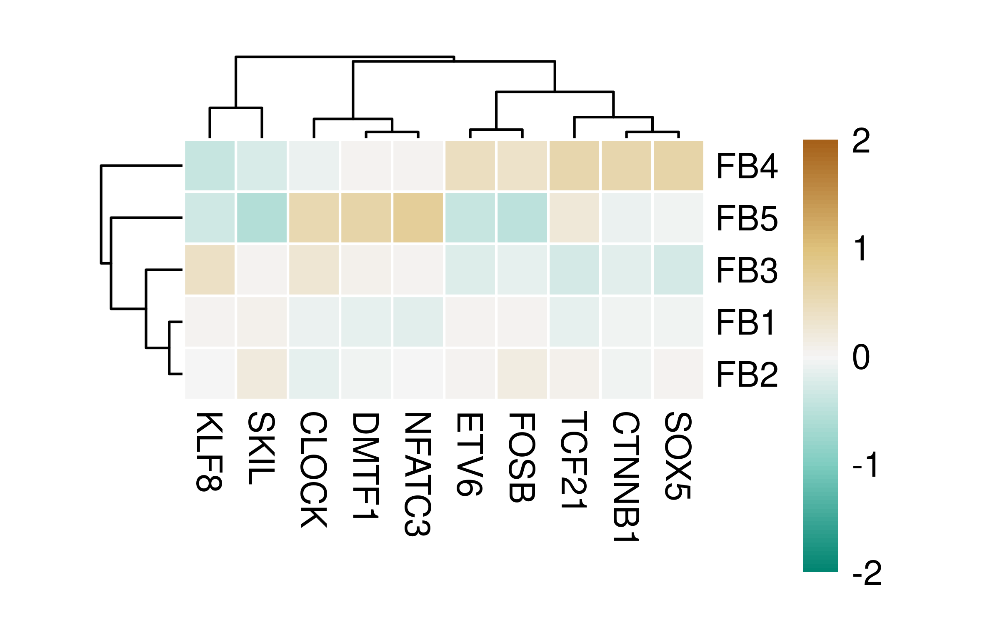
n_tfs <- 20
df <- t(as.matrix(FB@assays$tfsulm@data)) %>%
as.data.frame() %>%
dplyr::mutate(cluster = Seurat::Idents(FB)) %>%
tidyr::pivot_longer(cols = -cluster,
names_to = "source",
values_to = "score") %>%
dplyr::group_by(cluster, source) %>%
dplyr::summarise(mean = mean(score))
df <- df %>%
filter(source %in% filter(percent_stats, percentCells > 5)$gene)
tfs <- df %>%
dplyr::group_by(source) %>%
dplyr::summarise(std = stats::sd(mean)) %>%
dplyr::arrange(-abs(std)) %>%
head(n_tfs) %>%
dplyr::pull(source)
top_acts_mat <- df %>%
dplyr::filter(source %in% tfs) %>%
tidyr::pivot_wider(id_cols = 'cluster',
names_from = 'source',
values_from = 'mean') %>%
tibble::column_to_rownames('cluster') %>%
as.matrix()
my_breaks <- c(seq(-2, 0, length.out = ceiling(100 / 2) + 1),
seq(0.05, 2, length.out = floor(100 / 2)))
# Plot
pheatmap::pheatmap(mat = top_acts_mat,
color = TF_cols,
border_color = "white",
breaks = my_breaks,
cellwidth = 15,
cellheight = 15,
treeheight_row = 20,
treeheight_col = 20) 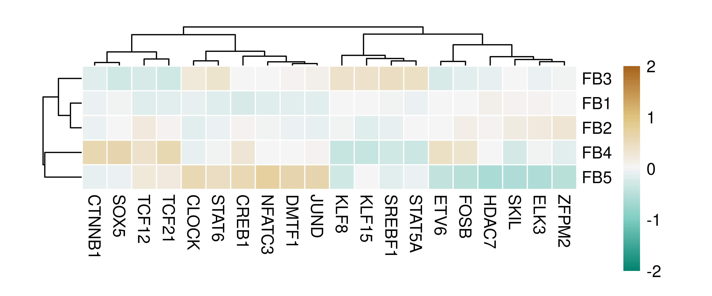
Seurat::DefaultAssay(FB) <- "tfsulm"
p1 <- Seurat::DimPlot(FB,
reduction = "umap",
label = TRUE,
pt.size = 0.1) +
Seurat::NoLegend() +
ggplot2::ggtitle('Cell states')
p2 <- Seurat::FeaturePlot(FB, features = c("NFATC3"), pt.size = 0.1, order = T) +
ggplot2::scale_colour_gradient2(low = TF_cols[1], high = TF_cols[101], mid = "white") +
ggplot2::ggtitle('NFATC3 activity')
DefaultAssay(object = FB) <- "RNA"
p3 <- Seurat::FeaturePlot(FB,
features = c("NFATC3"), pt.size = 0.1, order = T) +
ggplot2::ggtitle('NFATC3 expression')
Seurat::DefaultAssay(FB) <- "tfsulm"
p <- p1 | p2 | p3
p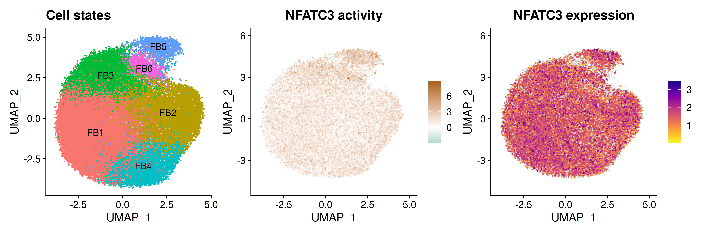
Pathway activity inference
net_path <- get_progeny(organism = 'human', top = 100000)Pathway_cols <- colorRampPalette(c("#28A2EB", "white", "#FFB233"))(101)acts_pathway <- decoupleR::run_mlm(mat = mat,
net = net_path,
.source = 'source',
.target = 'target',
.mor = 'weight',
minsize = 10)
FB[['pathwaysmlm']] <- acts_pathway %>%
tidyr::pivot_wider(id_cols = 'source',
names_from = 'condition',
values_from = 'score') %>%
tibble::column_to_rownames(var = 'source') %>%
Seurat::CreateAssayObject(.)
Seurat::DefaultAssay(object = FB) <- "pathwaysmlm"
FB <- Seurat::ScaleData(FB)
FB@assays$pathwaysmlm@data <- FB@assays$pathwaysmlm@scale.dataSeurat::DefaultAssay(object = FB) <- "pathwaysmlm"
p1 <- Seurat::DimPlot(FB,
reduction = "umap",
label = TRUE,
pt.size = 0.11) +
Seurat::NoLegend() +
ggplot2::ggtitle('Cell states')
p2 <- Seurat::FeaturePlot(FB, features = c("TGFb"),
pt.size = 0.1, order = T) +
ggplot2::scale_colour_gradientn(colors = Pathway_cols
) +
ggplot2::ggtitle('TGFb activity')
p <- p1 | p2
p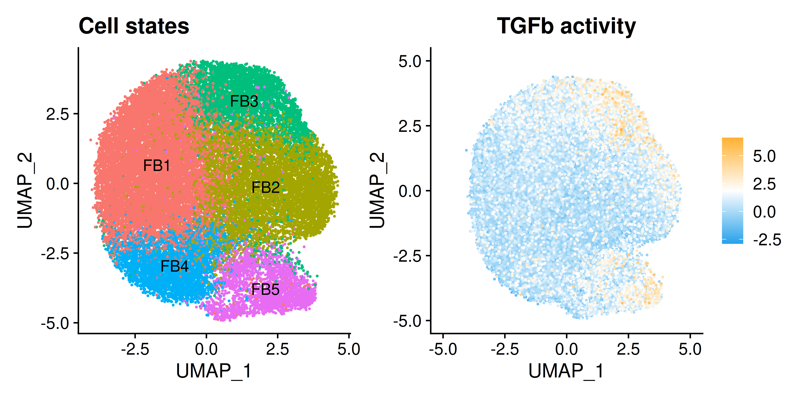
df_pathway <- t(as.matrix(FB@assays$pathwaysmlm@data)) %>%
as.data.frame() %>%
dplyr::mutate(cluster = Seurat::Idents(FB)) %>%
tidyr::pivot_longer(cols = -cluster,
names_to = "source",
values_to = "score") %>%
dplyr::group_by(cluster, source) %>%
dplyr::summarise(mean = mean(score))
top_acts_mat <- df_pathway %>%
tidyr::pivot_wider(id_cols = 'cluster',
names_from = 'source',
values_from = 'mean') %>%
tibble::column_to_rownames(var = 'cluster') %>%
as.matrix()
my_breaks <- c(seq(-1.25, 0, length.out = ceiling(101 / 2) + 1),
seq(0.05, 1.25, length.out = floor(101 / 2)))
pheatmap::pheatmap(mat = top_acts_mat,
color = Pathway_cols,
border_color = "white",
breaks = my_breaks,
cellwidth = 20,
cellheight = 20,
treeheight_row = 20,
treeheight_col = 20) 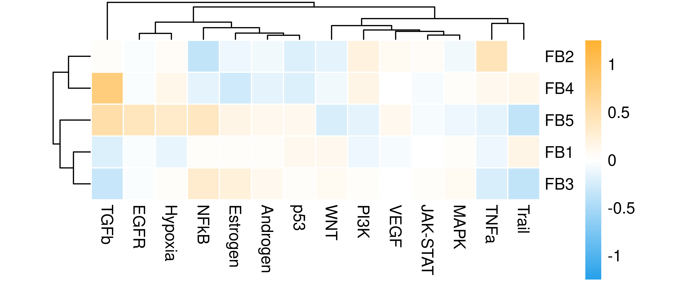
saveRDS(FB,
here::here(output_dir_data, "FB.rds"))
sessionInfo()R version 4.3.1 (2023-06-16)
Platform: x86_64-pc-linux-gnu (64-bit)
Running under: Ubuntu 22.04.4 LTS
Matrix products: default
BLAS: /usr/lib/x86_64-linux-gnu/openblas-pthread/libblas.so.3
LAPACK: /usr/lib/x86_64-linux-gnu/openblas-pthread/libopenblasp-r0.3.20.so; LAPACK version 3.10.0
locale:
[1] LC_CTYPE=en_US.UTF-8 LC_NUMERIC=C
[3] LC_TIME=en_US.UTF-8 LC_COLLATE=en_US.UTF-8
[5] LC_MONETARY=en_US.UTF-8 LC_MESSAGES=en_US.UTF-8
[7] LC_PAPER=en_US.UTF-8 LC_NAME=en_US.UTF-8
[9] LC_ADDRESS=en_US.UTF-8 LC_TELEPHONE=en_US.UTF-8
[11] LC_MEASUREMENT=en_US.UTF-8 LC_IDENTIFICATION=en_US.UTF-8
time zone: Etc/UTC
tzcode source: system (glibc)
attached base packages:
[1] grid stats4 stats graphics grDevices utils datasets
[8] methods base
other attached packages:
[1] enrichplot_1.22.0 dorothea_1.14.1
[3] OmnipathR_3.10.1 decoupleR_2.9.7
[5] reactable_0.4.4 limma_3.58.1
[7] speckle_1.2.0 ReactomePA_1.46.0
[9] AnnotationHub_3.10.0 BiocFileCache_2.10.1
[11] dbplyr_2.4.0 org.Hs.eg.db_3.18.0
[13] AnnotationDbi_1.64.1 clusterProfiler_4.10.1
[15] gprofiler2_0.2.3 harmony_1.2.0
[17] clustree_0.5.1 ggraph_2.2.1
[19] rhdf5_2.46.1 Rcpp_1.0.12
[21] data.table_1.15.2 plyr_1.8.9
[23] gtable_0.3.4 gtools_3.9.5
[25] ArchR_1.0.2 statmod_1.5.0
[27] patchwork_1.2.0 scater_1.30.1
[29] scuttle_1.12.0 Matrix.utils_0.9.7
[31] RColorBrewer_1.1-3 scales_1.3.0
[33] knitr_1.45 gridExtra_2.3
[35] png_0.1-8 pheatmap_1.0.12
[37] reshape2_1.4.4 lubridate_1.9.3
[39] forcats_1.0.0 stringr_1.5.1
[41] purrr_1.0.2 tidyr_1.3.1
[43] tibble_3.2.1 tidyverse_2.0.0
[45] magrittr_2.0.3 ggplot2_3.5.0
[47] dplyr_1.1.4 scCustomize_3.0.1
[49] scDblFinder_1.16.0 Matrix_1.6-5
[51] DropletUtils_1.22.0 SingleCellExperiment_1.24.0
[53] SummarizedExperiment_1.32.0 Biobase_2.62.0
[55] GenomicRanges_1.54.1 GenomeInfoDb_1.38.7
[57] IRanges_2.36.0 S4Vectors_0.40.2
[59] BiocGenerics_0.48.1 MatrixGenerics_1.14.0
[61] matrixStats_1.2.0 SeuratObject_5.0.2
[63] Seurat_4.4.0 xlsx_0.6.5
[65] readxl_1.4.3 readr_2.1.5
[67] here_1.0.1
loaded via a namespace (and not attached):
[1] R.methodsS3_1.8.2 vroom_1.6.5
[3] progress_1.2.3 goftest_1.2-3
[5] Biostrings_2.70.2 HDF5Array_1.30.1
[7] vctrs_0.6.5 spatstat.random_3.2-3
[9] digest_0.6.35 shape_1.4.6.1
[11] git2r_0.33.0 ggrepel_0.9.5
[13] deldir_2.0-4 parallelly_1.37.1
[15] bcellViper_1.38.0 MASS_7.3-60.0.1
[17] httpuv_1.6.14 qvalue_2.34.0
[19] withr_3.0.0 ggrastr_1.0.2
[21] ggfun_0.1.4 xfun_0.42
[23] ellipsis_0.3.2 survival_3.5-8
[25] memoise_2.0.1 ggbeeswarm_0.7.2
[27] gson_0.1.0 janitor_2.2.0
[29] tidytree_0.4.6 zoo_1.8-12
[31] GlobalOptions_0.1.2 pbapply_1.7-2
[33] R.oo_1.26.0 prettyunits_1.2.0
[35] rematch2_2.1.2 KEGGREST_1.42.0
[37] promises_1.2.1 httr_1.4.7
[39] restfulr_0.0.15 globals_0.16.3
[41] fitdistrplus_1.1-11 rhdf5filters_1.14.1
[43] rstudioapi_0.15.0 miniUI_0.1.1.1
[45] generics_0.1.3 DOSE_3.28.2
[47] reactome.db_1.86.2 curl_5.2.1
[49] zlibbioc_1.48.0 ScaledMatrix_1.10.0
[51] polyclip_1.10-6 GenomeInfoDbData_1.2.11
[53] SparseArray_1.2.4 interactiveDisplayBase_1.40.0
[55] xtable_1.8-4 evaluate_0.23
[57] S4Arrays_1.2.1 hms_1.1.3
[59] irlba_2.3.5.1 filelock_1.0.3
[61] colorspace_2.1-0 ROCR_1.0-11
[63] reticulate_1.35.0 spatstat.data_3.0-4
[65] lmtest_0.9-40 snakecase_0.11.1
[67] ggtree_3.10.1 later_1.3.2
[69] viridis_0.6.5 lattice_0.22-5
[71] spatstat.geom_3.2-9 future.apply_1.11.1
[73] shadowtext_0.1.3 scattermore_1.2
[75] XML_3.99-0.16.1 cowplot_1.1.3
[77] RcppAnnoy_0.0.22 pillar_1.9.0
[79] nlme_3.1-164 compiler_4.3.1
[81] beachmat_2.18.1 stringi_1.8.3
[83] tensor_1.5 GenomicAlignments_1.38.2
[85] crayon_1.5.2 abind_1.4-5
[87] BiocIO_1.12.0 gridGraphics_0.5-1
[89] locfit_1.5-9.9 sp_2.1-3
[91] graphlayouts_1.1.1 bit_4.0.5
[93] fastmatch_1.1-4 whisker_0.4.1
[95] codetools_0.2-19 BiocSingular_1.18.0
[97] crosstalk_1.2.1 bslib_0.6.1
[99] paletteer_1.6.0 plotly_4.10.4
[101] mime_0.12 splines_4.3.1
[103] circlize_0.4.16 sparseMatrixStats_1.14.0
[105] HDO.db_0.99.1 cellranger_1.1.0
[107] grr_0.9.5 blob_1.2.4
[109] utf8_1.2.4 BiocVersion_3.18.1
[111] fs_1.6.3 checkmate_2.3.1
[113] listenv_0.9.1 DelayedMatrixStats_1.24.0
[115] logger_0.3.0 ggplotify_0.1.2
[117] tzdb_0.4.0 tweenr_2.0.3
[119] pkgconfig_2.0.3 tools_4.3.1
[121] cachem_1.0.8 RSQLite_2.3.5
[123] rvest_1.0.4 viridisLite_0.4.2
[125] DBI_1.2.2 graphite_1.48.0
[127] fastmap_1.1.1 rmarkdown_2.26
[129] ica_1.0-3 Rsamtools_2.18.0
[131] sass_0.4.9 BiocManager_1.30.22
[133] ggprism_1.0.4 dotCall64_1.1-1
[135] graph_1.80.0 selectr_0.4-2
[137] RANN_2.6.1 farver_2.1.1
[139] scatterpie_0.2.1 tidygraph_1.3.1
[141] yaml_2.3.8 workflowr_1.7.1
[143] rtracklayer_1.62.0 cli_3.6.2
[145] leiden_0.4.3.1 lifecycle_1.0.4
[147] uwot_0.1.16 backports_1.4.1
[149] bluster_1.12.0 BiocParallel_1.36.0
[151] timechange_0.3.0 rjson_0.2.21
[153] ggridges_0.5.6 progressr_0.14.0
[155] ape_5.7-1 parallel_4.3.1
[157] jsonlite_1.8.8 edgeR_4.0.16
[159] bitops_1.0-7 bit64_4.6.0-1
[161] xgboost_1.7.7.1 Rtsne_0.17
[163] yulab.utils_0.1.4 spatstat.utils_3.1-0
[165] BiocNeighbors_1.20.2 highr_0.10
[167] jquerylib_0.1.4 metapod_1.10.1
[169] GOSemSim_2.28.1 dqrng_0.3.2
[171] R.utils_2.12.3 reactR_0.6.0
[173] lazyeval_0.2.2 shiny_1.8.0
[175] htmltools_0.5.8.1 rJava_1.0-11
[177] GO.db_3.18.0 sctransform_0.4.1
[179] rappdirs_0.3.3 glue_1.7.0
[181] spam_2.10-0 XVector_0.42.0
[183] RCurl_1.98-1.14 treeio_1.26.0
[185] rprojroot_2.0.4 scran_1.30.2
[187] igraph_2.0.3 R6_2.5.1
[189] labeling_0.4.3 xlsxjars_0.6.1
[191] cluster_2.1.6 Rhdf5lib_1.24.2
[193] aplot_0.2.2 DelayedArray_0.28.0
[195] tidyselect_1.2.1 vipor_0.4.7
[197] xml2_1.3.6 ggforce_0.4.2
[199] future_1.33.1 rsvd_1.0.5
[201] munsell_0.5.0 KernSmooth_2.23-22
[203] htmlwidgets_1.6.4 fgsea_1.28.0
[205] rlang_1.1.6 spatstat.sparse_3.0-3
[207] spatstat.explore_3.2-6 fansi_1.0.6
[209] beeswarm_0.4.0